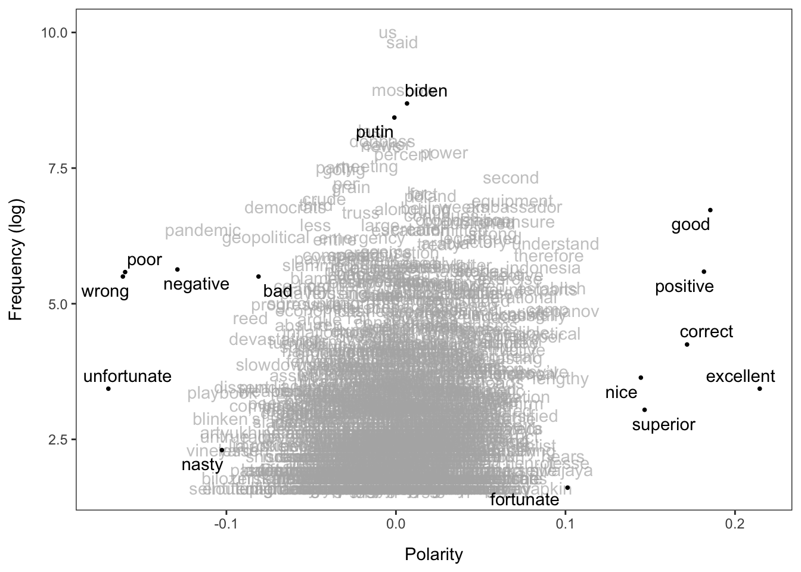
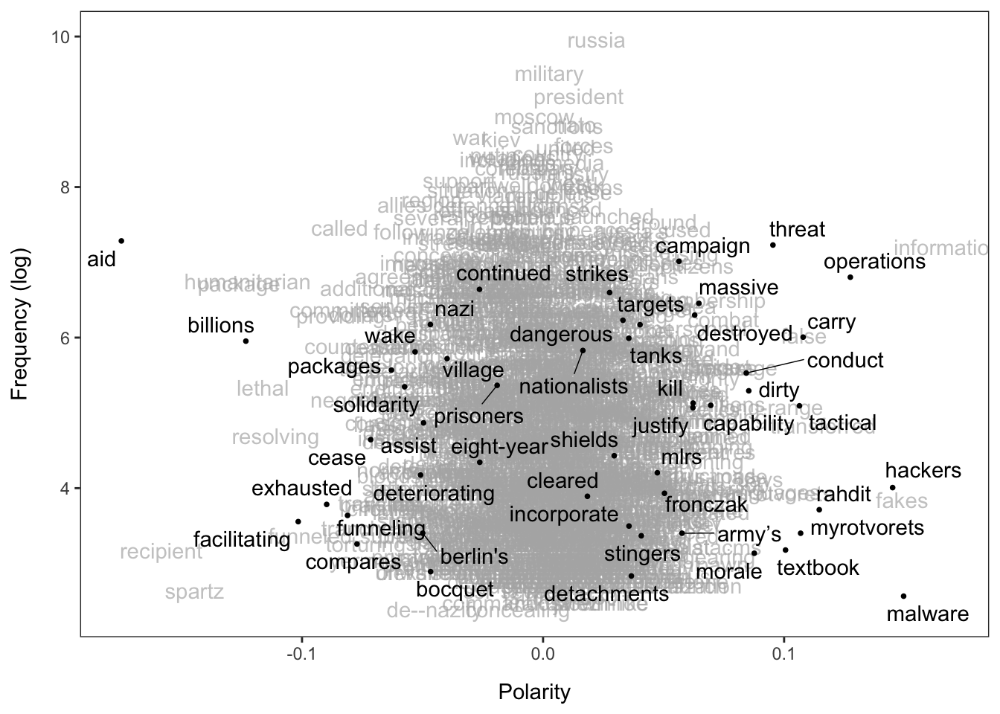
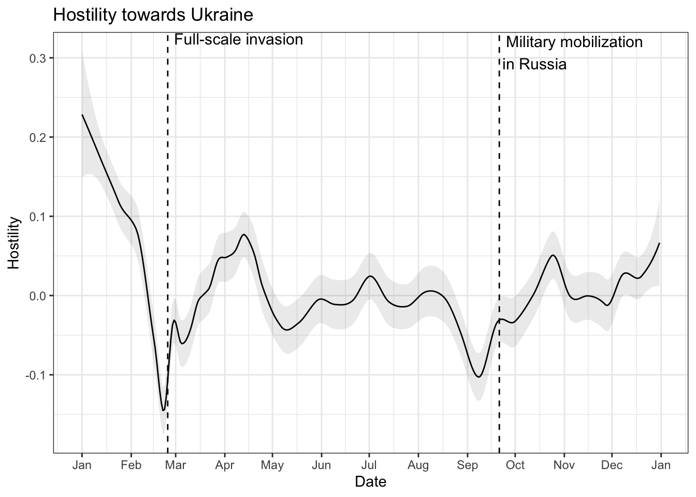
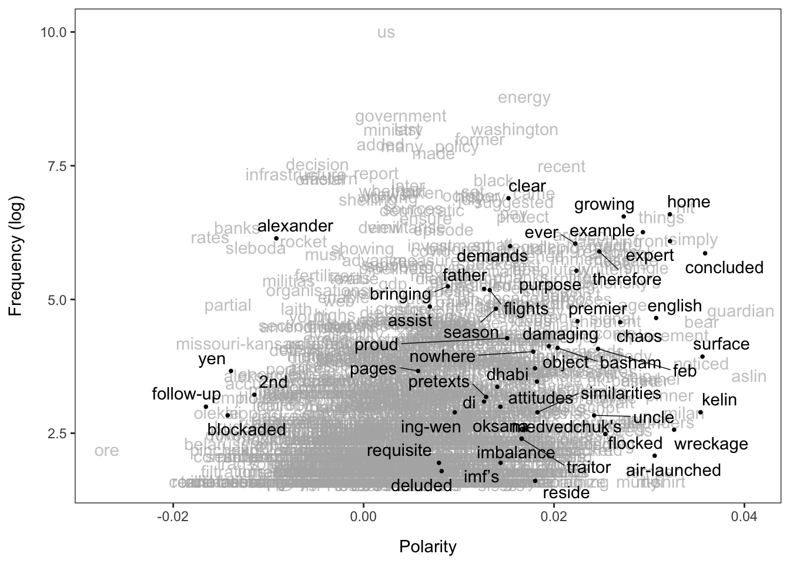
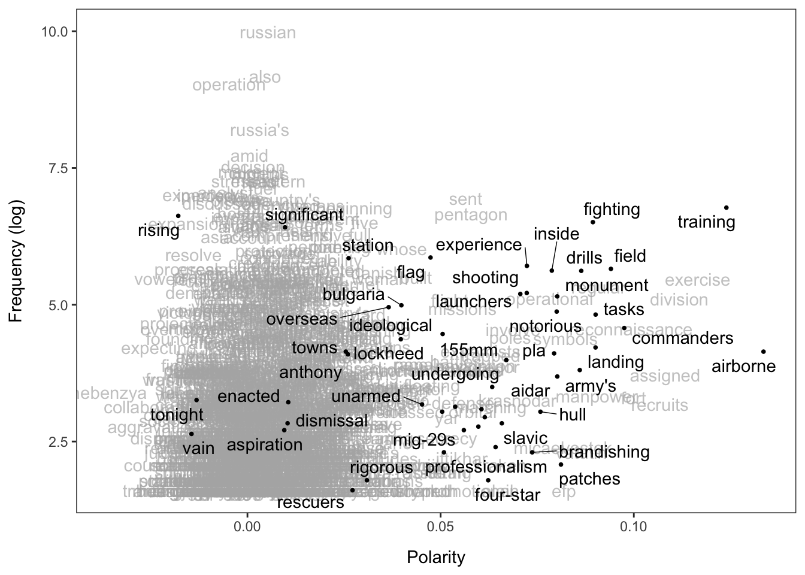
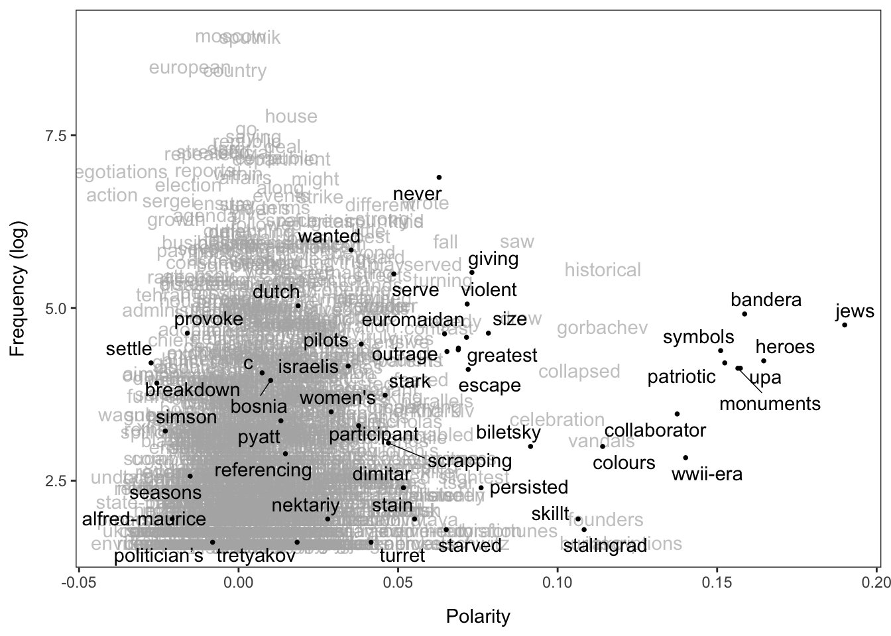
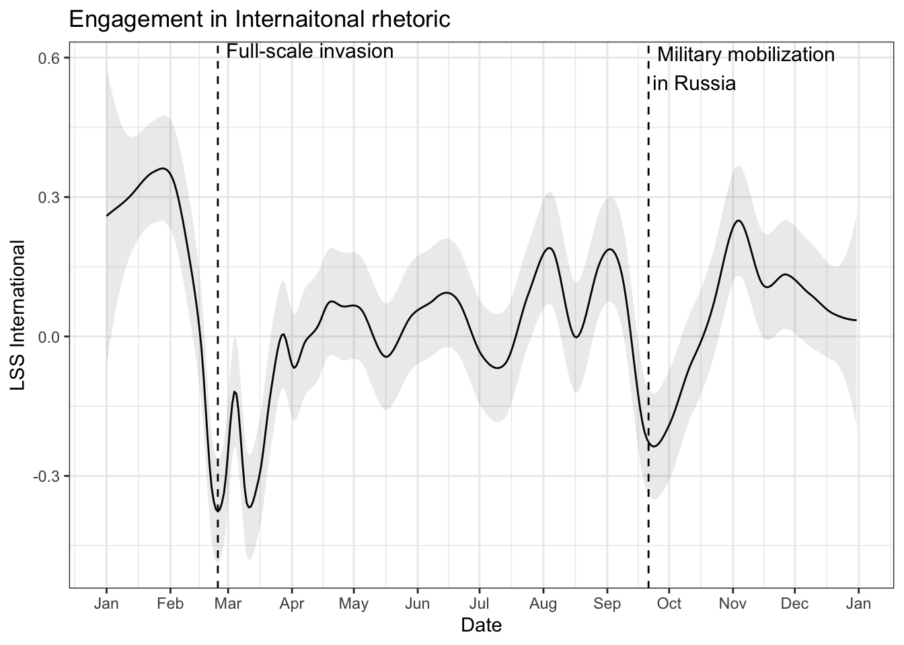
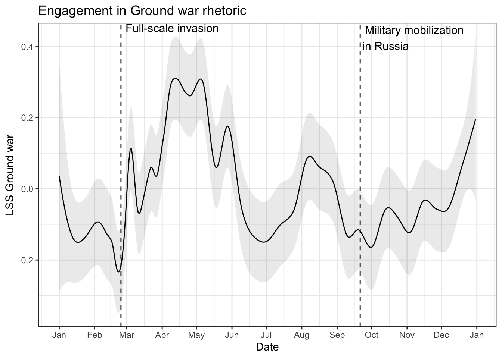
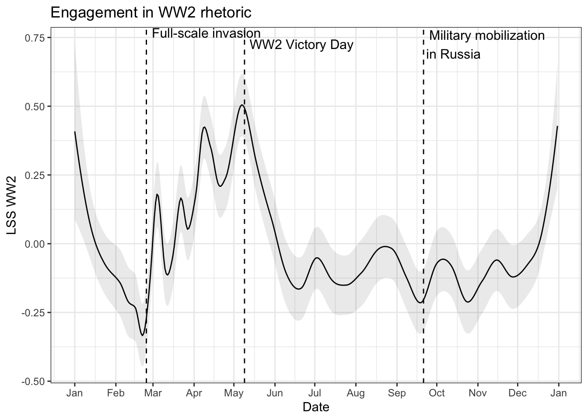
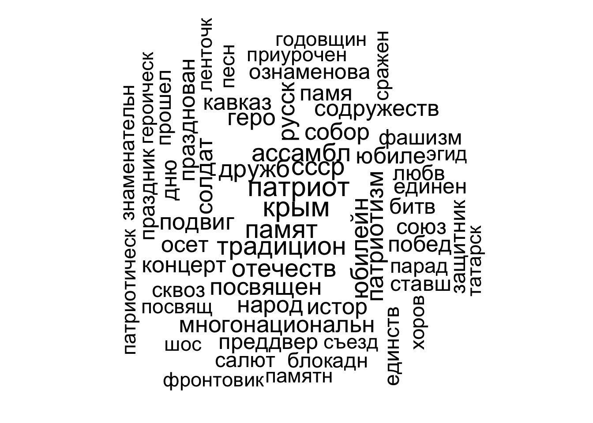

#install.packages("LSX")Introduction to Latent Semantic Scaling
Introduction
Latent Semantic Scaling (LSS) Watanabe (2021) is a semi-supervised word-embedding scaling technique that allows to locate documents on pre-defined dimensions of your interest. The user provides seed words to define the scale (e.g., sentiment, hostility). Then, the algorithm estimates polarity of words in the corpus and locates documents on a unidimensional scale.
This tutorial is drawing on the tutorials by Kohei Watanabe: Introduction to LSX and Latent Semantic Scaling.
Installation
From CRAN:
From Github:
#devtools::install_github("koheiw/LSX")#install.packages(c('quanteda', 'quanteda.corpora',
# 'quanteda.textstats', 'quanteda.textplots',
# 'dplyr', 'ggplot2', 'geomtextpath', 'wordcloud',
# 'plm', 'modelsummary'))Loading required packages
packs <- c('LSX', 'quanteda', 'quanteda.corpora',
'quanteda.textstats', 'quanteda.textplots',
'dplyr', 'ggplot2', 'geomtextpath', 'wordlcloud',
'plm', 'modelsummary')
# Install missing packages
#installed <- packs %in% rownames(installed.packages())
#if (any(!installed)) install.packages(packs[!installed])
lapply(packs, require, character.only = TRUE)Loading required package: LSXLoading required package: quantedaPackage version: 3.3.1
Unicode version: 14.0
ICU version: 70.1Parallel computing: 4 of 4 threads used.See https://quanteda.io for tutorials and examples.Loading required package: quanteda.corporaLoading required package: quanteda.textstatsLoading required package: quanteda.textplotsLoading required package: dplyr
Attaching package: 'dplyr'The following objects are masked from 'package:stats':
filter, lagThe following objects are masked from 'package:base':
intersect, setdiff, setequal, unionLoading required package: ggplot2Loading required package: geomtextpathLoading required package: wordlcloudWarning in library(package, lib.loc = lib.loc, character.only = TRUE,
logical.return = TRUE, : there is no package called 'wordlcloud'Loading required package: plm
Attaching package: 'plm'The following objects are masked from 'package:dplyr':
between, lag, leadThe following object is masked from 'package:quanteda':
indexLoading required package: modelsummary[[1]]
[1] TRUE
[[2]]
[1] TRUE
[[3]]
[1] TRUE
[[4]]
[1] TRUE
[[5]]
[1] TRUE
[[6]]
[1] TRUE
[[7]]
[1] TRUE
[[8]]
[1] TRUE
[[9]]
[1] FALSE
[[10]]
[1] TRUE
[[11]]
[1] TRUECorpus 1: Russian propaganda on Ukraine
Preparing the text corpus
We will first work with the corpus of news from the Russian propaganda outlet Sputnik contaning the word Ukraine in 2022, provided by Kohei Watanabe: download here (save it in the same working directory as this .qmd file).
corp <- readRDS("data/data_corpus_sputnik2022.rds")Check the number of documents in the text corpus:
ndoc(corp)[1] 8063Let’s check the first text:
as.character(corp)[1] s1092644731
"On Monday, US President Joe Biden reiterated the United States' commitment to diplomacy as tensions between Russia, Ukraine, and NATO worsened. \n\nBiden told reporters\n\n, \"We continue to urge diplomacy as the best way forward, but with Russia continuing its buildup of its forces around Ukraine, we are ready no matter what happens\".\n\nBiden spoke with Ukrainian President Volodymyr Zelensky last week, and the president continues what he referred to as \"non-stop diplomacy\".\n\n\"I had a productive talk last week with President Zelensky, and we continue to engage in non-stop diplomacy\".\n\nAccording to\n\n CNN\n\n, however, the purported \"productive\" talks were not well-received by Biden's Ukrainian counterpart. A senior Ukrainian official claimed that there is a disconnect over the difference between the two sides' risk in the event of a Russian invasion. \n\nWhite House National Security Council spokesperson Emily Horne dismissed reports of a disconnect between Kiev and Washington as false.\n\nThe White House confirmed they have sanction packages ready, should the situation call for it, that target Russian elites and their families. \n\nAccording to the White House\n\n, the targets \"are in or near the inner circle of the Kremlin, play a role in government decision making or at a minimum complicit in the Kremlin's destabilising behaviour\".\n\nBiden Backs Move to Designate Qatar as 'Major Non-NATO Ally'\n\nOn Monday, Biden said he would notify Congress of his intention to designate Qatar as a key non-NATO ally. He is said to have made the decision while meeting with Qatar's emir, Sheikh Tamim bin Hamad al-Thani, in the Oval Office. \n\nThe two reportedly discussed regional security and a push for equal rights for Palestinians. \n\n\n\n\n\n\n\n.\n\n@POTUS\n\n, in meeting with emir of Qatar, says he wants diplomacy with Moscow but as Russia continues to build up forces along the Ukraine border, the U.S. is ready for anything. \n\npic.twitter.com/z279wlev7i\n\n— Jeff Mason (@jeffmason1) \n\nJanuary 31, 2022\n\n\n\n\nEurope and several NATO allies are gripped by an energy crisis. Russia supplies over 30% of Europe's natural gas and is the continent's most crucial source of energy. With the threat of sanctions and a potential conflict over the purported buildup of Russian troops along the Ukrainian border, Europe and NATO have looked to find alternative energy exporters to meet their demand. Qatar has been one of the nations \n\nreportedly chosen\n\n to help ease Europe's energy crunch.\n\nPentagon: Troops on 'Heightened Alert' Over Ukraine Crisis Have Not Been Given Deployment Orders\n\nLast week, the United States military put 8,500 troops stationed in the US on \"heightened alert\" for deployment to Eastern Europe and the Baltic States, according to Pentagon press secretary John Kirby. \n\n\"They have not been given deployment orders\", Kirby said. \"They've just been told to be ready on a shorter period of time in case the alliance activates that\".\n\nAccording to Kirby, the troops could be deployed in five days if called upon. US troops already stationed in Europe could also be called up. The majority of troops are ground forces and would be part of a NATO response force in the event, according to Washington and its allies, that Russia engaged Ukraine in a military conflict.\n\nKirby told reporters the Pentagon's decision came down to a belief that \"it is very clear the Russians have no intensions of de-escalating\".\n\nA deployment of troops would reportedly not be a US military decision, but rather a NATO decision, according to Kirby. \n\nUS Open Talks Proposal on Ukraine 'Classic Example of Megaphone Diplomacy'\n\nThe US has approached the United Nations in an attempt to gain international support over their allegations that a Russian invasion of Ukraine is an imminent threat. The Kremlin has regularly denied the continuing accusations and has cited NATO's increased military presence on its borders over the past decade as a clear double standard. \n\nThe US ambassador to the UN, Linda Thomas-Greenfield, implored the UN Security Council to look at Russia's actions and not to take Kremlin statements at face value. She added, however, that diplomacy is the preferred course of action. \n\nWashington has asked Moscow to take part in a public meeting to discuss security concerns in the region.\n\n\"The United States has been clear. If this is truly about Russia's security concerns in Europe, we're offering them an opportunity to address these concerns at the negotiating table\", Thomas-Greenfield said.\n\nRussia's ambassador to the UN, Vassily Nebenzia, called the US request for an open meeting a \n\n\"classic example of megaphone diplomacy\".\n\nHe observed that the United States and its allies have failed to provide evidence that an attack is imminent and believes Washington is actually pushing for a worst-case scenario, armed conflict, to occur, as a means of justifying an increased global military footprint. \n\n\"Talks about the coming war are provocative by themselves. seems to be calling for this, wanting and waiting for to happen, as if you want to make your speculations come true\", Nebenzia pointed out." Reshape the corpus to sentences, tokenize and pre-process it: remove punctuation, non-textual symbols, numbers, URLs, and English stop words (grammatical words that appear often in the text):
corp_sent <- corpus_reshape(corp, to = "sentences") # reshape to sentences
toks_sent <- corp_sent %>%
tokens(remove_punct = TRUE, remove_symbols = TRUE,
remove_numbers = TRUE, remove_url = TRUE) %>%
tokens_remove(stopwords("en"))Create a document-feature matrix:
dfmt <- dfm(toks_sent) |>
dfm_remove(pattern = "") |> # remove space from the DFM
dfm_trim(min_termfreq = 5) # trim the DFM from the features that rarely appear (e.g., less than 5 times across all documents)Example 1: Sentiment
First, let’s evaluate the general sentiment of Russian news articles on Ukraine over 2022.
data_dictionary_sentiment is the built-in dictionary of sentiment seed words.
as.seedwords() converts the dictionary object to a named numeric vector, in which numbers indicate seed words’ polarity (positive: 1 or negative: -1).
seed_sentiment <- LSX::as.seedwords(data_dictionary_sentiment)
print(seed_sentiment) good nice excellent positive fortunate correct
1 1 1 1 1 1
superior bad nasty poor negative unfortunate
1 -1 -1 -1 -1 -1
wrong inferior
-1 -1 textmodel_lss() computes the polarity scores of all the words in the corpus based on their semantic similarity to the seed words.
lss_sentiment <- textmodel_lss(dfmt, seeds = seed_sentiment)Let’s take a look at the top-20 words associated with the “positive” pole.
as.data.frame(head(coef(lss_sentiment), 20)) head(coef(lss_sentiment), 20)
excellent 0.2145698
good 0.1854292
positive 0.1816735
mend 0.1768906
diplomatic 0.1740417
correct 0.1717065
russo-american 0.1648571
relations 0.1548362
cordial 0.1527409
mutual 0.1512451
understanding 0.1492428
soured 0.1481486
reaffirmed 0.1479711
friendly 0.1475290
superior 0.1466709
70th 0.1464543
normalise 0.1445001
nice 0.1444575
maintain 0.1436995
normalising 0.1412014Now see top-20 words associated with the “negative” pole.
as.data.frame(tail(coef(lss_sentiment), 20)) tail(coef(lss_sentiment), 20)
mitigate -0.1124128
contributes -0.1130591
ba -0.1135220
anti-trump -0.1137989
pandemic -0.1138519
hiroshima -0.1147711
class -0.1154528
disproportionately -0.1174913
josh -0.1176860
novel -0.1236345
subvariant -0.1272572
threatens -0.1286198
negative -0.1289053
watson -0.1502266
deshaun -0.1513966
nfl -0.1517632
poor -0.1597352
wrong -0.1610638
spells -0.1662341
unfortunate -0.1696293You can visualize the polarity of words using textplot_terms().
When highlighted = NULL (default option), `textplot_terms` randomly samples 50 words and highlights them.
textplot_terms(lss_sentiment)Warning: ggrepel: 1 unlabeled data points (too many overlaps). Consider
increasing max.overlaps
You can also manually specify which words (or emoji) to highlight. You can pass glob patterns to highlighted if you want.
textplot_terms(lss_sentiment, highlighted = c('biden', 'putin', names(seed_sentiment)))
Before predicting polarity of documents, we should reconstruct original full texts of articles from their sentences using dfm_group().
dfmt_doc <- dfm_group(dfmt)
dat <- docvars(dfmt_doc)
dat$docname <- docnames(dfmt_doc)
print(nrow(dat))[1] 8063Overall, we have 8,063 documents - news articles in English containing the word Ukraine from the Russian propaganda outlet Sputnik, over 2022.
Note that we can also run the initial textmodel_lss() estimation with non-default parameters.
When both
include_dataandgroup_dataareTRUE(bothFALSEby default), it internally appliesdfm_group()toxto group the sentences into the original documents, effectively reversing the segmentation bycorpus_reshape(), and save a grouped DFM in the LSS object aslss_sentiment$data. In such a case, we do not need to “reconstruct” original full texts from sentences, as we did above.If
cache = TRUE(FALSEby default), an intermediate object is saved in a folderlss_cachein the working directory.k = 300(by default) is the number of singular values requested to the singular value decomposition (SVD) engine.(Watanabe 2021, 88): “The literature suggests that the optimal value of k in SVD is around 200–300 for synonym identification”.
See also the “Hyperparameter Optimization” section in (Watanabe 2021, 96–97)
lss_sentiment2 <- textmodel_lss(dfmt, seeds = seed_sentiment,
k = 300,
include_data = TRUE,
group_data = TRUE,
cache = TRUE)Writing cache file: lss_cache/svds_880d3cd3883e22e4.RDSNow, let’s predict polarity of documents.
dat$lss_sentiment <- predict(lss_sentiment, newdata = dfmt_doc)To visualize the polarity of documents, you need first to smooth their scores using smooth_lss()1.
smo <- smooth_lss(dat, lss_var = "lss_sentiment", date_var = "date")Now, we visualize the sentiment of news articles over time, with 95% confidence intervals.
ggplot(smo, aes(x = date, y = fit)) +
geom_line() +
geom_ribbon(aes(ymin = fit - se.fit * 1.96, ymax = fit + se.fit * 1.96), alpha = 0.1) +
geom_vline(xintercept = as.Date("2022-02-24"), linetype = "dotted") +
scale_x_date(date_breaks = "months", date_labels = "%b") +
labs(title = "Sentiment about articles on Ukraine", x = "Date", y = "Sentiment") +
theme_bw()
Example 2: Hostility towards Ukraine
Following Trubowitz and Watanabe (2021), we can estimate hostility towards Ukraine expressed in the Sputnik articles in 2022. You can download the hostility dictionary file from the Github repository.
dict <- dictionary(file = "data/dictionary_hostility.yml")
print(dict$hostility)Dictionary object with 2 key entries.
- [hostile]:
- adversary, adversaries, enemy, enemies, foe, foes, hostile
- [friendly]:
- aid, aids, friends, friend, ally, allies, peacefulWe convert the dictionary into a named numeric vector, in which numbers indicate seed words’ polarity.
hostility <- as.seedwords(dict$hostility)To target hostility towards Ukraine, you should assign polarity scores only to words that occur around “ukrain*” as its modifiers. You can collect such words using char_context() and pass them to textmodel_lss() through terms.
group_data is set to FALSE because we want to analyze each sentence in this example.
term <- toks_sent |> char_context(pattern = "ukrain*", p = 0.01)
lss_hostility <- textmodel_lss(dfmt, seeds = hostility, terms = term,
include_data = TRUE)as.data.frame(head(coef(lss_hostility), 10)) head(coef(lss_hostility), 10)
information 0.1679121
malware 0.1495801
fakes 0.1490043
hackers 0.1450184
operations 0.1274739
operatives 0.1206912
transferred 0.1161760
rahdit 0.1145856
nationalism 0.1089410
false 0.1082845as.data.frame(tail(coef(lss_hostility), 10)) tail(coef(lss_hostility), 10)
funneled -0.09653453
facilitating -0.10158606
resolving -0.11093048
lethal -0.11618711
humanitarian -0.12255891
billions -0.12330203
package -0.12614307
spartz -0.14455401
recipient -0.15838429
aid -0.17494417textplot_terms(lss_hostility)
We can compute the polarity scores of documents using predict() with min_n to avoid short sentences to receive extremely large negative or positive scores (i.e. outliers).
predict() tends to return extreme scores for short sentences because it computes the polarity of documents based on the polarity of words weighted by their frequency. To prevent a small number of words from determining the document scores, we set min_n = 15, which is roughly the first quantile of the sentence lengths.
dat2 <- docvars(lss_hostility$data)
quantile(ntoken(lss_hostility$data)) 0% 25% 50% 75% 100%
0 9 13 19 167 dat2$lss_hostility <- predict(lss_hostility, min_n = 15)You can use smooth_lss() to visualize the scores, but engine should be “locfit” when the data frame has more than 10 thousands scores.
smo2 <- smooth_lss(dat2, lss_var = "lss_hostility", date_var = "date", engine = "locfit")Now, let’s visualize hostility towards Ukraine expressed in Sputnik news over 2022.
ggplot(smo2, aes(x = date, y = fit)) +
geom_line() +
geom_ribbon(aes(ymin = fit - se.fit * 1.96, ymax = fit + se.fit * 1.96), alpha = 0.1) +
geom_vline(xintercept = as.Date("2022-02-24"), linetype = "dashed") +
geom_vline(xintercept = as.Date("2022-09-21"), linetype = "dashed") +
scale_x_date(date_breaks = "months", date_labels = "%b") +
labs(title = "Hostility towards Ukraine", x = "Date", y = "Hostility") +
theme_bw() +
annotate(
"text",
x = as.Date("2022-02-24"),
y = Inf,
label = "Full-scale invasion",
size = 4,
vjust = 1.1,
hjust = -0.05) +
annotate("text",
x = as.Date("2022-09-21"),
y = Inf,
label = "Military mobilization\nin Russia",
size = 4,
vjust = 1.1,
hjust = -0.05
)
Example 3: Placement on the war-related dimensions
LSS works also for cases when we define the seed words for one pole of our dimension only. For instance, we have a set of words associated with a particular theme, but we do not have a set of words which would define the opposite pole for this theme. So, LSS will place documents on the scale, where we have only +1 pole, defined by our seed words.
In the context of the ongoing Russia-Ukraine war, we can hypothesize that Russian propaganda articles mentioning Ukaine can be placed on the following latent dimensions: (1) ‘International’ (2) ‘Ground war operations’ (3) ‘World War 2’ (the analogy between WW2 and Russian invasion of Ukraine is often used by Russian propaganda).
So, we first define three dimensions of our theoretical interests with seed words.
keywords <- list(
international = c("nato*", "peace*", "west*", "usa*", "europe*", "zelensk*", "biden*", "un*", "americ*", "washington*", "international*", "kyiv*", "mfa*", "russophob*", "britain*", "european*", "franc*", "nuclear*", "uk")
,
ground_war = c('militar*', 'combat*', 'operat*', 'special*', 'defen*', 'arm*', 'troop*', 'service*', 'territor*', 'battalion*', 'fleet*', 'commander*', 'lieutenant*', 'airborne*', 'crew*', 'artillery*', 'paratrooper*', 'command*', 'sergeant*', 'major*', 'tank*', 'soldier*')
,
wwii = c('fascis*', 'victor*', 'great*', 'histor*', 'hero*', 'nazi*', 'soviet*', 'patriot*', 'memor*', 'homeland*', 'feat*', 'leningrad*', 'stalingrad*', 'invader*', 'grandfather*', 'fallen*')
)
keywords <- dictionary(keywords)Now, we run estimations of words’ polarities for each dimension.
lss_international <- textmodel_lss(dfmt, keywords["international"])
lss_ground_war <- textmodel_lss(dfmt, keywords["ground_war"])
lss_wwii <- textmodel_lss(dfmt, keywords["wwii"])as.data.frame(head(coef(lss_ground_war), 10)) head(coef(lss_ground_war), 10)
brigade 0.1601302
combat 0.1391691
airborne 0.1335668
infantry 0.1332081
soldiers 0.1328685
colonel 0.1310139
attached 0.1286344
lieutenant 0.1280001
trained 0.1251352
training 0.1239563textplot_terms(lss_international)
textplot_terms(lss_ground_war)Warning: ggrepel: 6 unlabeled data points (too many overlaps). Consider
increasing max.overlaps
textplot_terms(lss_wwii)Warning: ggrepel: 2 unlabeled data points (too many overlaps). Consider
increasing max.overlaps
#dfmt_doc <- dfm_group(dfmt)
#dat <- docvars(dfmt_doc)
dat$lss_international <- predict(lss_international, newdata = dfmt_doc)
dat$lss_ground_war <- predict(lss_ground_war, newdata = dfmt_doc)
dat$lss_wwii <- predict(lss_wwii, newdata = dfmt_doc)smo3 <- smooth_lss(dat, lss_var = "lss_international", date_var = "date", engine = "locfit")ggplot(smo3, aes(x = date, y = fit)) +
geom_line() +
geom_ribbon(aes(ymin = fit - se.fit * 1.96, ymax = fit + se.fit * 1.96), alpha = 0.1) +
geom_vline(xintercept = as.Date("2022-02-24"), linetype = "dashed") +
geom_vline(xintercept = as.Date("2022-09-21"), linetype = "dashed") +
scale_x_date(date_breaks = "months", date_labels = "%b") +
labs(title = "Engagement in Internaitonal rhetoric", x = "Date", y = "LSS International") +
theme_bw() +
annotate(
"text",
x = as.Date("2022-02-24"),
y = Inf,
label = "Full-scale invasion",
size = 4,
vjust = 1.1,
hjust = -0.05) +
annotate("text",
x = as.Date("2022-09-21"),
y = Inf,
label = "Military mobilization\nin Russia",
size = 4,
vjust = 1.1,
hjust = -0.05
)
smo4 <- smooth_lss(dat, lss_var = "lss_ground_war", date_var = "date", engine = "locfit")
ggplot(smo4, aes(x = date, y = fit)) +
geom_line() +
geom_ribbon(aes(ymin = fit - se.fit * 1.96, ymax = fit + se.fit * 1.96), alpha = 0.1) +
geom_vline(xintercept = as.Date("2022-02-24"), linetype = "dashed") +
geom_vline(xintercept = as.Date("2022-09-21"), linetype = "dashed") +
scale_x_date(date_breaks = "months", date_labels = "%b") +
labs(title = "Engagement in Ground war rhetoric", x = "Date", y = "LSS Ground war") +
theme_bw() +
annotate(
"text",
x = as.Date("2022-02-24"),
y = Inf,
label = "Full-scale invasion",
size = 4,
vjust = 1.1,
hjust = -0.05) +
annotate("text",
x = as.Date("2022-09-21"),
y = Inf,
label = "Military mobilization\nin Russia",
size = 4,
vjust = 1.1,
hjust = -0.05
)
smo5 <- smooth_lss(dat, lss_var = "lss_wwii", date_var = "date", engine = "locfit")
ggplot(smo5, aes(x = date, y = fit)) +
geom_line() +
geom_ribbon(aes(ymin = fit - se.fit * 1.96, ymax = fit + se.fit * 1.96), alpha = 0.1) +
geom_vline(xintercept = as.Date("2022-02-24"), linetype = "dashed") +
geom_vline(xintercept = as.Date("2022-05-09"), linetype = "dashed") +
geom_vline(xintercept = as.Date("2022-09-21"), linetype = "dashed") +
scale_x_date(date_breaks = "months", date_labels = "%b") +
labs(title = "Engagement in WW2 rhetoric", x = "Date", y = "LSS WW2") +
theme_bw() +
annotate(
"text",
x = as.Date("2022-02-24"),
y = Inf,
label = "Full-scale invasion",
size = 4,
vjust = 1.1,
hjust = -0.05) +
annotate("text",
x = as.Date("2022-09-21"),
y = Inf,
label = "Military mobilization\nin Russia",
size = 4,
vjust = 1.1,
hjust = -0.05) +
annotate("text",
x = as.Date("2022-05-09"),
y = Inf,
label = "WW2 Victory Day",
size = 4,
vjust = 2.3,
hjust = -0.05
)
We can also plot trends for all dimensions on one graph.
# --- Make a helper function for smoothing and labeling ---
make_smo <- function(data, lss_var, facet_label) {
out <- smooth_lss(data, lss_var = lss_var, date_var = "date", engine = "locfit")
out$facet <- facet_label
return(out)
}
# --- Generate all smoothed datasets ---
smo_all <- bind_rows(
make_smo(dat, "lss_international", "International"),
make_smo(dat, "lss_ground_war", "Ground War"),
make_smo(dat, "lss_wwii", "WW2"),
)
smo_all$facet <- factor(
smo_all$facet,
levels = c("Ground War", "International", "WW2")
)ggplot(smo_all, aes(x = date, y = fit)) +
geom_line() +
geom_ribbon(
aes(ymin = fit - se.fit * 1.96, ymax = fit + se.fit * 1.96),
alpha = 0.1, colour = NA
) +
geom_vline(xintercept = as.Date("2022-02-24"), linetype = "dashed") +
geom_vline(xintercept = as.Date("2022-09-21"), linetype = "dashed") +
scale_x_date(date_breaks = "months", date_labels = "%b") +
labs(x = "Date", y = "LSS Score") +
theme_bw() +
theme(
axis.title.x = element_blank(),
strip.text = element_text(size = 14),
axis.text = element_text(size = 12),
text = element_text(size = 14)
) +
facet_wrap(~ facet, scales = "free_y", ncol = 1) +
annotate(
"text",
x = as.Date("2022-02-24"),
y = Inf,
label = "Full-scale invasion",
size = 3,
vjust = 1.1,
hjust = 0.08
) +
annotate(
"text",
x = as.Date("2022-09-21"),
y = Inf,
label = "Military mobilization",
size = 3,
vjust = 1.1,
hjust = 0.08
)
Keyness analysis
#texts(corp)[1:3]
#docnames(corp)[1:3]
#docnames(dfmt_doc)[1:3]
dat %>% arrange(desc(lss_ground_war)) %>% select(docname) %>% slice(1) docname
1 s1097818892top_ground_war <- texts(corp)[docnames(corp) == "s1097818892"]Warning: 'texts.corpus' is deprecated.
Use 'as.character' instead.
See help("Deprecated")dat %>% arrange(lss_ground_war) %>% select(docname) %>% slice(1) docname
1 s1093775236tail_ground_war <- texts(corp)[docnames(corp) == "s1104348562"]Warning: 'texts.corpus' is deprecated.
Use 'as.character' instead.
See help("Deprecated")data_keyness <- data.frame(
text = c(top_ground_war, tail_ground_war),
ground_war = c('top', 'tail'),
stringsAsFactors = FALSE
)corpus_keyness <- corpus(data_keyness)
tok_keyness <- quanteda::tokens(corpus_keyness, what = "word",
remove_punct = TRUE,
remove_symbols = TRUE,
remove_numbers = TRUE,
remove_url = TRUE,
verbose = TRUE,
split_hyphens = TRUE,
split_tags = TRUE)Creating a tokens object from a corpus input... ...starting tokenization ...tokenizing 1 of 1 blocks ...segmenting into words ...334 unique types ...removing separators, punctuation, symbols, numbers, URLs ...complete, elapsed time: 0.029 seconds.Finished constructing tokens from 2 documents.#toks2_keyness <- tokens_remove(tok_keyness, stopwords, padding = TRUE)
dfm_keyness <- dfm(tok_keyness,
tolower = TRUE,
verbose = TRUE)Creating a dfm from a tokens input... ...lowercasing ...found 2 documents, 306 features ...complete, elapsed time: 0.019 seconds.Finished constructing a 2 x 306 sparse dfm.dfm_keyness <- dfm_remove(dfm_keyness, stopwords("en"))
dfm_keyness <- dfm_remove(dfm_keyness, '')
dfm_keyness <- quanteda::dfm_wordstem(dfm_keyness)
dfm_keyness <- quanteda::dfm_group(dfm_keyness, groups = ground_war) result_keyness <- textstat_keyness(dfm_keyness, target = "top")textplot_keyness(result_keyness, margin = 0.4, color = c("black", "grey"), n = 10) +
theme(legend.position="bottom", legend.text=element_text(size=10), plot.title = element_text(hjust = 0.5)) + ggtitle("Top vs Tail on Ground war") 
Corpus 2: Russian governors’ addresses
Preparing the text corpus
Now, we will work with the text corpus of regional legislative addresses by Russian governors in 2007-2021, in Russian, from Baturo, Khokhlov, and Tolstrup (2024). The corpus can be downloaded here (save it in the same working directory as this .qmd file).
gov_corpus <- readRDS("data/gov_corpus.RDS")
ndoc(gov_corpus)[1] 924Example 4: Governors’ engagement in Putin’s agenda in Russia
Dowlonad dictionary from here (save it as dictionary_putin.yml in the same working directory as this .qmd file).
dict_putin <- dictionary(file = "data/dictionary_putin.yml")Warning in readLines(con, warn = readLines.warn): incomplete final line found
on 'data/dictionary_putin.yml'dict_putin["putin_agenda2"]Dictionary object with 1 key entry.
- [putin_agenda2]:
- путин, путина, путиным, крым, украин, патриот, побед, фаши, суверен, традиционPrepare dfm for the analysis.
toks2 <- gov_corpus %>%
corpus_reshape("sentences") %>%
tokens(remove_punct = TRUE) %>%
tokens_remove(pattern = stopwords("ru", source = "snowball"))
dfmt2 <- toks2 %>%
dfm() %>%
dfm_select("^\\p{L}+$", valuetype = "regex", min_nchar = 2) %>%
dfm_trim(min_termfreq = 5)
dfmt2 <- dfm_remove(dfmt2, "")
dfmt2 <- dfm_wordstem(dfmt2, language = "russian")Calculate polarity scores for words on the “putin_agenda” dimension.
putin_agenda <- textmodel_lss(dfmt2, dict_putin["putin_agenda2"], cache = FALSE)Save top terms associated with seed words defining Putin’s agenda.
cloud <- head(coef(putin_agenda), 100)
cloud<-as.data.frame(cloud)
cloud$word <- rownames(cloud)Visualize the word cloud for top terms associated with Putins’ agenda.
library(wordcloud)Loading required package: RColorBrewerwordcloud(cloud$word,cloud$cloud,scale=c(2,0.1),random.order=FALSE, rot.per=0.35, use.r.layout=FALSE, max.words=60)
textplot_terms(putin_agenda, highlighted = c('эконом*', 'америк*', 'социал*', 'полит*', dict_putin["putin_agenda2"]))
Now, let’s calculate polarity scores for documents.
dat <- docvars(dfmt)
dat$putin_agenda <- predict(putin_agenda, newdata = dfmt)Example 5: LSS Scores in regression models
Let’s download the dataset with lss scores and speaker-level and region-level covariates used in Baturo, Khokhlov, and Tolstrup (2024).
df <- readRDS("data/data_governors.rds")We use LSS scores as a dependent variable (lss_putinagenda2) in a regression model with governor- and region-level covariates.
m1 <- plm(lss_putinagenda2 ~ lognextdays + preselec_window + transfers_log + aftercrimea + reg_deputies_ur_share + reg_grp_pc_log + gov_background_main_business + appointed_first_by_putin_bin + siloviki , data = df[ which(!complete.cases(df$noposlanie) & !complete.cases(df$written)), ], effect = "individual", model = "within", index='region')modelsummary(
m1,
statistic = "({std.error})",
stars = TRUE,
output = "gt",
gof_omit = "IC|Log|Adj",
coef_map = c(
lognextdays = "Log days to election",
preselec_window = "Pre-election window",
transfers_log = "Log federal transfers",
aftercrimea = "Post-Crimea",
reg_deputies_ur_share = "UR deputies share",
reg_grp_pc_log = "Log GRP per capita",
gov_background_main_business = "Governor business background",
appointed_first_by_putin_bin = "First appointed by Putin",
siloviki = "Siloviki background"
)
)| (1) | |
|---|---|
| Log days to election | 0.000 |
| (0.007) | |
| Pre-election window | -0.009 |
| (0.018) | |
| Log federal transfers | 0.037* |
| (0.014) | |
| Post-Crimea | 0.033+ |
| (0.019) | |
| UR deputies share | 0.000 |
| (0.001) | |
| Log GRP per capita | -0.003 |
| (0.005) | |
| Governor business background | -0.073** |
| (0.024) | |
| First appointed by Putin | 0.039+ |
| (0.020) | |
| Siloviki background | -0.095** |
| (0.034) | |
| Num.Obs. | 680 |
| R2 | 0.052 |
| RMSE | 0.14 |
| + p < 0.1, * p < 0.05, ** p < 0.01, *** p < 0.001 | |
References
Baturo, Alexander, Nikita Khokhlov, and Jakob Tolstrup. 2024. “Playing the Sycophant Card: The Logic and Consequences of Professing Loyalty to the Autocrat.” American Journal of Political Science 69 (3): 1180–95. https://doi.org/10.1111/ajps.12909.
Trubowitz, Peter, and Kohei Watanabe. 2021. “The Geopolitical Threat Index: A Text-Based Computational Approach to Identifying Foreign Threats.” International Studies Quarterly 65 (3): 852–65. https://doi.org/10.1093/isq/sqab029.
Watanabe, Kohei. 2021. “Latent Semantic Scaling: A Semisupervised Text Analysis Technique for New Domains and Languages.” Communication Methods and Measures 15 (2): 81–102. https://doi.org/10.1080/19312458.2020.1832976.